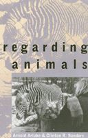

Questioning our conflicting views of the role of animals
Questioning our conflicting views of the role of animals


 Questioning our conflicting views of the role of animals
Questioning our conflicting views of the role of animals

|  |
Regarding AnimalsArnold Arluke and Clinton R. Sanderspaper EAN: 978-1-56639-441-3 (ISBN: 1-56639-441-4) |
Charles Horton Cooley Book Award, Society for the Study of Symbolic Interaction, 1997
"The ways in which we 'regard' animals have a great deal to do with the ways in which we regard ourselves and the social contexts in which we live, the authors suggest....Each of them has spent considerable time working in shelters, research laboratories, and other institutions where human-animal interactions take place....The book is packed with interesting facts and intriguing insight."
—The Bloomsbury Review
What is it about Western society, ask the authors, that makes it possible for people to express great affection for animals as sentient creatures and simultaneously turn a blind eye to the most callous behavior toward them? Animals are sold as expensive commodities, used as food and clothing, killed as vermin, and hunted for sport. But they also are treated as members of the family, used as the cause célèbre of social movements, and made the subject of art, film, and poetry. Such contradictions motivate these unique ethnographers to venture into social worlds most people know about only in passing, such as veterinary clinics where companion animals are cared for, animal shelters where dogs and cats are "mercifully" euthanized, and primate labs where monkeys are kept for animal experimentation.
Arluke and Sanders are not distanced ethnographers. They worked in the clinics, shelters, and laboratories, cleaning cages, assisting in surgery, and participating in "sacrificing" animals for science or helping to provide them with an "easy death." In this book, the people who work with these animals and live through them talk to the authors about the strategies they adopt to cope with the stress of the job.
This fascinating book combines sociological analysis with ethnographic description to give us insight into the history and practice of how we as human beings construct animals, and by extrapolation, how we construct ourselves and others in relation to them.
Excerpt available at www.temple.edu/tempress
"It is clearly not the authors' objective to preach or judge, but rather to observe the socially constructed view of animals that ultimately sheds brilliant light on the humans who are doing the constructing."
—Publishers Weekly
"If the contemporary literature on human-animal relations has something like a modern 'classic' it is Arluke and Sanders's Regarding Animals.... "
—Sociological Forum
Acknowledgments
Introduction: Bringing Animals to the Center
Part I: The Human-Animal Tribe
1. The Human Point of View
2. Learning from Animals
Part II: Living with Contradiction
3. Speaking for Dogs
4. The Institutional Self of Shelter Workers
5. Systems of Meaning in Primate Las
6. Boundary Work in Nazi German
7. The Sociozoologic Scale
Conclusion: Paradox and Change
References
Index
 | Arnold Arluke is Professor of Sociology at Northeastern University and a Research Associate at the Center for Animals and Public Policy at Tufts School of Veterinary Medicine. He is an Associate Editor of Society and Animals and the author of The Making of Rehabilitation: A Political Economy of Medical Specialization with Glenn Gritzer and Gossip: The Inside Scoop with Jack Levin. |
 | Clinton R. Sanders, Professor of Sociology at the University of Connecticut, is the author of Customizing the Body: The Art and Culture of Tattooing (Temple) and the co-editor (with Jeff Ferrell) of Cultural Criminology. |
General Interest
Animals and Society
Animals, Culture, and Society, edited by Arnold Arluke and Clinton R. Sanders.
Animals, Culture, and Society, edited by Arnold Arluke and Clinton R. Sanders, is concerned with probing the complex and contradictory human-animal relationship through the publication of accessible books that consider the place of animals in our culture, our literature, our society, and our homes.
© 2015 Temple University. All Rights Reserved. This page: http://www.temple.edu/tempress/titles/1151_reg.html.